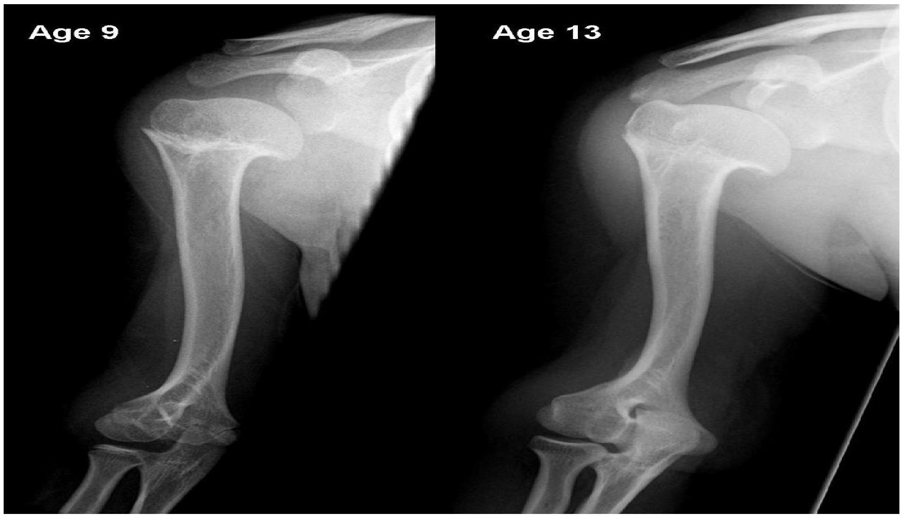

TRAUMATIC CONDITIONS
Dislocations
What is a dislocation?
A dislocation occurs when a bone slips out of a joint.
An untreated dislocation could cause damage to ligaments, nerves, or blood vessels.
causes
Dislocations occurs when there is an unexpected or unbalanced impact.
Symptoms of a Dislocation
Some of the other symptoms associated with dislocated joints include:
- Loss of motion
- Pain during movement
- Numbness around the area
- Tingling feeling
Diagnosis
- Physical exam
- x-ray
Treatment
According to Johns Hopkins university, initial treatment for any dislocation involves rice: rest, ice, compression, and elevation. In some cases, the dislocated joint might go back into place naturally after this treatment.
If the joint doesn't return to normal naturally, the following treatments are used.
- Manipulation or repositioning
- Immobilization
- Medication
- Rehabilitation
Manipulation
In this method, your doctor will manipulate or reposition the joint back into place. You'll be given a sedative or anesthetic to remain comfortable and also to allow the muscles near your joint to relax, which eases the procedure.
Immobilization
After your joint returns to its proper place, your doctor may ask you to wear a sling, splint, or cast for several weeks. This will prevent the joint from moving and allow the area to fully heal. The length of time your joint needs to be immobile will vary, depending on the joint and severity of the injury.
Medication
Most of your pain should go away after the joint returns to its proper place. However, your doctor may prescribe a pain reliever or a muscle relaxant if you're still feeling pain.
Surgery
You will need surgery only if the dislocation damaged your nerves or blood vessels, or if your doctor is unable to return your bones to their normal position. Surgery may also be necessary for those who often dislocate the same joints, such as their shoulders. To prevent re-dislocation, it may be necessary to reconstruct the joint and repair any damaged structures. On occasion, a joint has to be replaced, such as a hip replacement.
Rehabilitation
Rehabilitation begins after your doctor properly repositions or manipulates the joint into the correct position and removes the sling or splint (if you needed one). You and your doctor will devise a rehabilitation plan that works for you. The goal of rehabilitation is to gradually increase the joint's strength and restore its range of motion. Remember, it's important to go slowly so you don't reinjure yourself before the recovery is complete.
Sprains & strains
Overview
Sprains and strains are very common injuries that share very common causes and symptoms. However, they both involve different parts of the body.
Sprain
A sprain occurs when ligaments are stretched or torn beyond their normal range. Ligaments are tough bands of fibrous tissue that connect bone to bone. Sprains commonly occur in the ankles, knees, wrists, and thumbs. The ankle is the most common joint to be sprained.
Causes
Excessive wrenching or twisting motion.
Types
First degree
caused by tearing of few ligamentous fibers. Its manifested by mild edema, local tenderness, and pain on moving the joint.
Second degree
It involves tearing of more fibers, it results in increased edema, tenderness, pain with motion, joint instability, and partial loss of normal joint function.
Third degree
ligament is completely torn, manifested by severe pain, tenderness, increased edema, and abnormal joint motion.
Strain
A strain occurs when a muscle or tendon is stretched or torn beyond its normal range. A tendon is a fibrous cord of tissue that connects muscles to bones. The lower back and hamstrings are the most common muscles to be strained.
Causes
They result from overuse, overstretch or excessive stress to the mescle or tendon.
Symptoms
- Pain,
- swelling,
- bruising,
- muscle spasms, and a
- Limited ability to move the affected muscle.
Types
First degree- tearing of few muscle fibers. Its accompanied by minor edema, tenderness and mild muscle spasms without noticeable loss of function
Second degree- involves tearing of more muscles fibers and is manifested with a notable loss of load bearing strength with edema, tenderness, muscle spasm and ecchymosis.
Third degree- is the most severe type and involves complete disruption of at least one musculotendinous unit and it involves separation of muscle from muscle, muscle from tendon, or tendon from bone. Patient presents with significant pain, muscle spasm, ecchymosis, edema and loss of function.
Contusion
Is a soft tissue injury caused by blunt force such as a blow, a kick or a fall. Blood vessels rapture and bleed into the soft tissues forming a hematoma.
Signs
- Pain
- Swelling
- Discoloration.
Treatment
Its treated with rice- rest, ice, compression, elevation.
- Resting- prevents additional injury
- Elevation of the affected part
- Applying cold - applied within the first 24-48 hrs, ice causes vasoconstriction that then reduces edema bleeding and discomfort.
- Applying compression bandage- controls bleeding, reduce edema and provide support to the injured part.
In cases of 3rd degree in both strain and sprains, surgical repair or immobilization with casts is indicated.
#. After 48 hours, heat may be applied to facilitate vasodilation, absorption and repair and to relieve muscle spasm to promote healing
Fractures
A fracture is a break in the continuity of the bone. They result when the bone is subjected to greater force than it can absorb.
Types of fractures
- Simple(closed) - bone does not break through the skin
- Compound(open)-bone breaks or protrudes through the skin
- Complete fracture- a break across the entire bone and frequently displaced
- Incomplete- e.g. green stick -involves a break through only part of the cross section of the bone
- Comminuted fracture- produces bone fragments.
- Depressed fracture- a fracture where fragments are driven inwards. Especially on cranial and facial bones.
- Compression- bone has been compressed -as in vertebral fractures
- Green stick- a fracture where one side of the bone is broken and the opposite side is bent
- Avulsion-a fracture where a fragment of bone has been pulled away by a tendon and its attachment
- Oblique- a fracture that occurs at an angle across the bone
- Spiral- that twists around the shaft of the bone
- Impacted- bone fragment is driven into another bone fragment
- Transverse- straight across the bone
- Pathologic- that happens at an area of diseased bone and may occur without trauma or fall
* Open fractures can be graded into 3.
Grade1 - a clean wound less than 1 cm long
Grade2- a larger wound without excessive soft tissue damage
Grade 3- highly contaminated, has excessive soft tissue damage
Clinical manifestations
Pain- continuous until bone fragment is immobilized. Muscle spasm sets in 20 minutes after injury and results in more intense pain than was reported at the time of injury.
Loss of function- because normal muscle function depends on the integrity of the bones to which they are attached. Also, the presence of pain reduces function
Deformity- due to the possible displacement, angulation, or rotation of fragments. Also, from soft tissue swelling.
Shortening of extremity- due to the contraction of the muscle pulling the distal fragment proximally
Crepitus- it is a grantling sensation is felt when the fracture is examined with hands.
Local swelling
Discoloration- due to ecchymosis
Emergency management
Immobilize the injured part immediately before moving the patient. If they have to be moved first then the distal and proximal fragments are both supported.
Apply enough splinting both distally and proximally to avoid any more damage to tissues or blood vessels
Neurovascular assessment to be done quickly before and after application of splint before transporting.
For open fractures, a sterile gauze is applied on the wound to prevent contamination.
In the ER, the patient is quickly assessed, clothes removed gently of cut to expose injured part as gently as possible to avoid causing motion to the splinted part.
Medical management
The principles of fracture treatment include reduction, immobilization, and regaining of normal function and strength through rehabilitation.
Reduction
It means to restore the fracture fragment to its anatomical alignment and rotation. There are two types of reduction
- Closed reduction. - the bone fragments are manipulated and aligned well under anesthesia and a cast applied to immobilize it. A traction is then placed to affect the fracture reduction and immobilization.
- Open reduction. -it's a surgical approach where the injured site is opened, internal fixation devices placed (nails, pins, wires, screws, plates, and rods) to hold the fragments into position until solid bone healing occurs. The internal fixation ensures a firm approximation and fixation of the bony fragments.
Immobilization.
after reducing the bones into place, immobilization is done either internally or externally. This immobilization is called fixation. External fixation uses bandages, casts, splints, continuous traction and external fixators.
Internal fixation is done with internal pins that srve as internal splints.
Maintaining and restoring function
ensuring immobilization is maintained. Edema is controlled by elevating injured extremity. Neurovascular status is monitored frequently. Physiotherapy as healing continues.
Proper wound care
to avoid infection-with administration of antibiotics, daily cleaning and dressing and proper hygiene.
Traction
It is the application of a pulling force to a part of the body. It is used to minimize muscle spasms, reduce bone fragments, align and immobilize, reduce the deformity, and increase space between the opposing surfaces.
Principles of traction
- Whenever a traction is applied, a countertraction must be used. The patient's body and bed adjustments provide it.
- Must be continuous to be effective
- Skeletal traction is never interrupted
- Weights are not removed unless intermittent traction is prescribed.
- Eliminate any factor that might reduce the effective pull, or alter its resultant line of pull
- Patient in good body alignment
- Ropes must be unobstructed
- Weights must hang freely
- Knots on the footplate must not touch the pulley or the bed.
There are two main types of traction
Skin traction
used to control muscle spasms. It is accomplished by using a weight to pull on traction tape or on a foam boot attached to the skin. Amount of weight applied should not exceed the tension of the skin. About 23 kgs is normally used. Types of skin traction include
Hamilton-Russell traction
Hamilton Russell is a balanced traction system using vectors to affect a pull along the long axis of the femur. It is used to maintain the joint space at the hip, manage fractures of the acetabulum and support fractures of the shaft of the femur. Traction can be applied using below-knee skin traction or a skeletal pin (Clarke and Santy Tomlinson, 2014). This guidance can be used to apply HamiltonRussell traction to all age groups. Variation in the way this modality is applied may exist in clinical practice, however. The application of Hamilton-Russell traction should be carried out by at least two health care practitioners (HCPs) who are trained in the procedure.
skeletal traction.
It is applied directly to the bone by use of a metallic pin or wire. It avoids nerve, vessels and tendons and is used for long bones e.g. femur, tibia and also in cervical spine. Varied weights are placed according to the type of bone
Complications of bone healing
Delayed union
There are signs of bone healing, but they are taking longer than usual. Mostly 6 weeks
Non union
The diagnosis is generally made when there is no healing between two sets of x-ray. This is generally after 6-8 months. Nonunion is a serious complication of a fracture and may occur when the fracture moves too much, has a poor blood supply or gets infected. Patients who smoke have a higher incidence of nonunion.
Malunion
hen a fracture heals in a deformed position or with shortening of the limb, this is called a malunion
Osteomyelitis
Infection of the bone fracture site that has spread into the bone
Premature physeal closure
Due to fractures to the distal ends of long bones, the young patients may experience closure of epiphyseal plates on the affected bone thus stopping further bone growth.
Osteomyelitis
It is infection of the bones
Causes
Caused by many strains of bacteria and fungi that include staphylococcus epidermidis, s. Aureus, pseudomonas aeruginosa, serratia marcescens and Escherichia coli.
Some are caused by fungal infections.
The microbes get to the bones through any of the following means
- Extension of soft tissue infection surrounding the bone
- Direct bone contamination from bone surgery, fracture or traumatic injury.
- Hematogenous spread from another site of infection. It happens in an area of trauma or lowered resistance.
Pathophysiology
Once the causative organism has arrived at the site and colonized it, the initial response, inflammation is initiated. There's increased vascularity and edema in the first 2-3 days. Followed by thrombosis of the blood vessels in that region resulting in bone ischemia and necrosis. The infection then spreads into the medullary cavity and under the periosteum and may spread into the adjacent soft tissues and joints. If prompt treatment is not done, a bone abscess form. The abscess contains dead bone tissue called sequestrum that does not easily liquify to drain, therefore the cavity cannot collapse and heal as in a soft tissue injury. A new bone growth called an involucrum forms around the sequestrum.
Although healing appears to have taken place, the enclosed abscess produces recurring abscesses throughout the patient's life. At this point, it is referred to as chronic osteomyelitis.
Clinical manifestations
- Pain in the bones
- Whole body: chills, fatigue, fever, malaise, or night sweats
- Skin: ulcers or redness on the skin surrounding the infected bone
- Swelling
- Oozing pus from wounds close to the infected bone
Treatment
treatment is usually surgery to remove portions of bone that have died. This is followed by strong antibiotics, often by an iv, for at least six weeks. A central catheter is preferred for administration of antibiotics